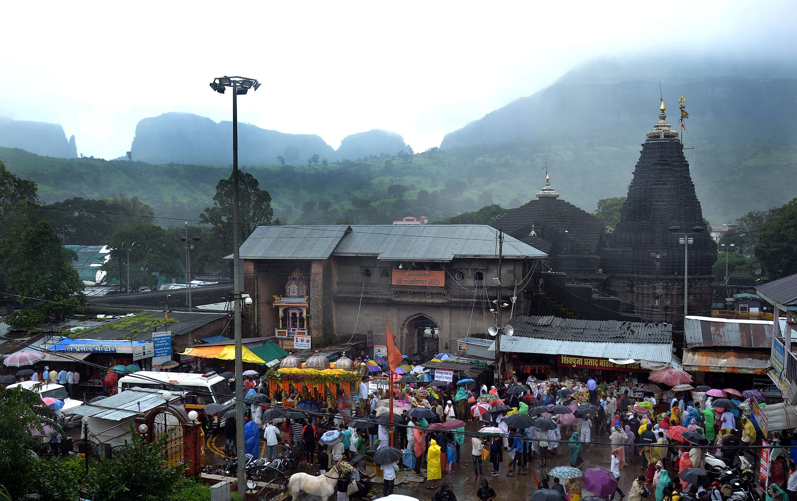

భారతదేశంలోని పవిత్ర ద్వాదశ జ్యోతిర్లింగాలలో పదవదిగా పూజలందుకుంటున్న మహా పుణ్యక్షేత్రం శ్రీ త్రయంబకేశ్వర జ్యోతిర్లింగం.
ఈ దివ్యధామం మహారాష్ట్రలోని నాసిక్ నగరానికి పశ్చిమాన సుమారు 28 కిలోమీటర్ల దూరంలో, పశ్చిమ కనుమలలోని పరమ పావన బ్రహ్మగిరి పర్వత పాదాల చెంత త్రయంబక్ పట్టణంలో వెలసి ఉంది. దక్షిణ భారతదేశపు జీవనాడి అయిన గోదావరి నది (గౌతమీ గంగ) ఆవిర్భవించిన పుణ్యస్థలి ఇదే.
‘త్రయంబకుడు’ అనగా త్రినేత్రుడైన పరమశివుడు. అంతేకాక సృష్టి, స్థితి, లయకారకులైన బ్రహ్మ, విష్ణు, మహేశ్వరుల త్రిమూర్తి తత్త్వాన్ని ఏకకాలంలో తనలో ఇముడ్చుకున్న అపూర్వ క్షేత్రంగా త్రయంబకేశ్వరం జగద్విఖ్యాతమైంది.
శ్రీ త్రయంబకేశ్వర జ్యోతిర్లింగ క్షేత్రం
ద్వాదశ జ్యోతిర్లింగ దివ్య క్షేత్రం & దక్షిణ గంగా (గోదావరి) ఉద్భవ స్థలి • త్రయంబక్, నాసిక్, మహారాష్ట్ర

౧. పరిచయం
౨. క్షేత్ర పురాణ గాథ — గౌతమ మహర్షి తపస్సు & గోదావరి ఆవిర్భావం
శివ పురాణంలోని కోటిరుద్ర సంహిత ప్రకారం, పూర్వం ఈ బ్రహ్మగిరి పర్వత ప్రాంతంలో సప్తర్షులలో ఒకరైన గౌతమ మహర్షి తన ధర్మపత్ని అహల్యాదేవితో కలిసి నివసించేవారు.
• మహా క్షామం & గౌతముని అన్నదానం: ఒకసారి ఆ ప్రాంతంలో 24 సంవత్సరాల పాటు వర్షాలు లేక భయంకరమైన కరవు ఏర్పడింది. అప్పుడు గౌతమ మహర్షి తీవ్ర తపస్సు చేసి వరుణదేవుని అనుగ్రహంతో అక్షయ ధాన్య రాశులను పొంది, ఆశ్రమానికి వచ్చిన వేలాది మంది ఋషులకు, ప్రజలకు ఆశ్రయమిచ్చి కడుపునిండా అన్నదానం చేశారు.
• మాయా గోవు ఉదంతం: గౌతముని కీర్తి ప్రతిష్టలను చూసి ఈర్ష్య చెందిన కొందరు దుష్ట ఋషులు ఒక మంత్రపూరితమైన మాయా గోవును సృష్టించి ఆయన ధాన్యపు పొలాలలోకి పంపించారు. గౌతమ మహర్షి ఆ గోవును నొప్పించకుండా ఒక దర్భ (కుశ) గడ్డి పోచతో మెల్లగా బయటకు మళ్లించబోగా, ఆ మాయా గోవు నేలపై పడి ప్రాణాలు విడిచినట్లు నటించింది.
• గోహత్యా నివారణార్థం తపస్సు: ఋషులంతా గౌతమునిపై ‘గోహత్యా పాతకం’ మోపి ఆశ్రమం నుండి వెలివేశారు. ఆ నిందను తొలగించుకోవడానికి గౌతమ మహర్షి బ్రహ్మగిరి శిఖరంపై నిలబడి పరమేశ్వరుని ప్రసన్నం చేసుకోవడానికి ఘోర తపస్సు ఆచరించాడు.
మహర్షి నిశ్చల భక్తికి పరవశుడైన పరమశివుడు ప్రత్యక్షమై, "గౌతమా! నీవు నిరపరాధివి. ఆ దుష్టుల కపట నాటకాన్ని నేను ఎరుగుదును" అని పలికాడు. అప్పుడు గౌతముడు లోక పావనార్థం పరమశివుని జటాజూటం నుండి గంగాభవానిని ఇక్కడ ప్రవహింపజేయాలని వేడుకున్నాడు. పరమేశ్వరుని ఆదేశంతో గంగమ్మ గోదావరి (గౌతమి) నదిగా నేలపైకి ఉరికింది. పరమశివుడు కూడా తన అంశతో శాశ్వతంగా ఇక్కడే శ్రీ త్రయంబకేశ్వర జ్యోతిర్లింగంగా కొలువుదీరాడు.
• మహా క్షామం & గౌతముని అన్నదానం: ఒకసారి ఆ ప్రాంతంలో 24 సంవత్సరాల పాటు వర్షాలు లేక భయంకరమైన కరవు ఏర్పడింది. అప్పుడు గౌతమ మహర్షి తీవ్ర తపస్సు చేసి వరుణదేవుని అనుగ్రహంతో అక్షయ ధాన్య రాశులను పొంది, ఆశ్రమానికి వచ్చిన వేలాది మంది ఋషులకు, ప్రజలకు ఆశ్రయమిచ్చి కడుపునిండా అన్నదానం చేశారు.
• మాయా గోవు ఉదంతం: గౌతముని కీర్తి ప్రతిష్టలను చూసి ఈర్ష్య చెందిన కొందరు దుష్ట ఋషులు ఒక మంత్రపూరితమైన మాయా గోవును సృష్టించి ఆయన ధాన్యపు పొలాలలోకి పంపించారు. గౌతమ మహర్షి ఆ గోవును నొప్పించకుండా ఒక దర్భ (కుశ) గడ్డి పోచతో మెల్లగా బయటకు మళ్లించబోగా, ఆ మాయా గోవు నేలపై పడి ప్రాణాలు విడిచినట్లు నటించింది.
• గోహత్యా నివారణార్థం తపస్సు: ఋషులంతా గౌతమునిపై ‘గోహత్యా పాతకం’ మోపి ఆశ్రమం నుండి వెలివేశారు. ఆ నిందను తొలగించుకోవడానికి గౌతమ మహర్షి బ్రహ్మగిరి శిఖరంపై నిలబడి పరమేశ్వరుని ప్రసన్నం చేసుకోవడానికి ఘోర తపస్సు ఆచరించాడు.
మహర్షి నిశ్చల భక్తికి పరవశుడైన పరమశివుడు ప్రత్యక్షమై, "గౌతమా! నీవు నిరపరాధివి. ఆ దుష్టుల కపట నాటకాన్ని నేను ఎరుగుదును" అని పలికాడు. అప్పుడు గౌతముడు లోక పావనార్థం పరమశివుని జటాజూటం నుండి గంగాభవానిని ఇక్కడ ప్రవహింపజేయాలని వేడుకున్నాడు. పరమేశ్వరుని ఆదేశంతో గంగమ్మ గోదావరి (గౌతమి) నదిగా నేలపైకి ఉరికింది. పరమశివుడు కూడా తన అంశతో శాశ్వతంగా ఇక్కడే శ్రీ త్రయంబకేశ్వర జ్యోతిర్లింగంగా కొలువుదీరాడు.
౩. అపూర్వ త్రిమూర్తి జ్యోతిర్లింగ స్వరూపం
ప్రపంచంలోని మరే శివలింగానికీ లేని ఒక అద్భుతమైన విశిష్టత త్రయంబకేశ్వర జ్యోతిర్లింగానికి ఉంది:
• లోతైన గుంటలో త్రిమూర్తి లింగాలు: సాధారణంగా శివలింగాలు పైకి ఉబికి ఉంటాయి. కానీ ఇక్కడ గర్భగుడి నేలమట్టంలో ఒక గుంట (ఖాంతం) వలే ఉంటుంది. ఆ గుంట లోపల బొటనవేలి పరిమాణంలో ఉండే సహజసిద్ధమైన మూడు లింగాకారాలు ఉంటాయి. ఇవి బ్రహ్మ, విష్ణు, మహేశ్వరుల సాక్షాత్ స్వరూపాలుగా ఆరాధించబడతాయి.
• అంతర్వాహిని జలధార: ఈ మూడు లింగాలపై నిరంతరం స్వచ్ఛమైన ప్రాకృతిక ఊట నీరు ప్రవహిస్తూ ఉంటుంది. దీనిని గంగాదేవి నిరంతర అభిషేకంగా భక్తులు భావిస్తారు.
• రత్నఖచిత స్వర్ణ కిరీటం: ప్రతి సోమవారం సాయంత్రం 4:00 నుండి 5:00 గంటల మధ్య పాండవుల కాలం నాటిదని విశ్వసించే అమూల్యమైన వజ్రాలు, రత్నాలు పొదిగిన బంగారు కిరీటాన్ని ఈ త్రిమూర్తి లింగాలకు అలంకరించి విశేష హారతి మరియు రథోత్సవం నిర్వహిస్తారు.
• లోతైన గుంటలో త్రిమూర్తి లింగాలు: సాధారణంగా శివలింగాలు పైకి ఉబికి ఉంటాయి. కానీ ఇక్కడ గర్భగుడి నేలమట్టంలో ఒక గుంట (ఖాంతం) వలే ఉంటుంది. ఆ గుంట లోపల బొటనవేలి పరిమాణంలో ఉండే సహజసిద్ధమైన మూడు లింగాకారాలు ఉంటాయి. ఇవి బ్రహ్మ, విష్ణు, మహేశ్వరుల సాక్షాత్ స్వరూపాలుగా ఆరాధించబడతాయి.
• అంతర్వాహిని జలధార: ఈ మూడు లింగాలపై నిరంతరం స్వచ్ఛమైన ప్రాకృతిక ఊట నీరు ప్రవహిస్తూ ఉంటుంది. దీనిని గంగాదేవి నిరంతర అభిషేకంగా భక్తులు భావిస్తారు.
• రత్నఖచిత స్వర్ణ కిరీటం: ప్రతి సోమవారం సాయంత్రం 4:00 నుండి 5:00 గంటల మధ్య పాండవుల కాలం నాటిదని విశ్వసించే అమూల్యమైన వజ్రాలు, రత్నాలు పొదిగిన బంగారు కిరీటాన్ని ఈ త్రిమూర్తి లింగాలకు అలంకరించి విశేష హారతి మరియు రథోత్సవం నిర్వహిస్తారు.
౪. కుశావర్త తీర్థం & పవిత్ర గోదావరి జన్మస్థలి
ఆలయానికి కొద్ది దూరంలో ఉన్న కుశావర్త తీర్థం గోదావరి నది ఆవిర్భావానికి ప్రతీకగా నిలిచే పరమ పావన పుష్కరిణి:
బ్రహ్మగిరి నుండి ఉద్భవించిన గంగా ప్రవాహం పలుమార్లు భూమి లోపలికి అదృశ్యమవుతుండగా, గౌతమ మహర్షి కుశ (దర్భ) గడ్డితో ఆ జలప్రవాహానికి అడ్డుకట్ట వేసి ఒకేచోట బంధించి ప్రశాంత సరోవరంగా మార్చాడని స్థలపురాణం చెబుతుంది. అందువల్ల దీనికి 'కుశావర్తం' అని పేరు వచ్చింది. కుశావర్త తీర్థంలో స్నానమాచరిస్తే సమస్త పాపాలు హరిస్తాయని విశ్వాసం.
బ్రహ్మగిరి నుండి ఉద్భవించిన గంగా ప్రవాహం పలుమార్లు భూమి లోపలికి అదృశ్యమవుతుండగా, గౌతమ మహర్షి కుశ (దర్భ) గడ్డితో ఆ జలప్రవాహానికి అడ్డుకట్ట వేసి ఒకేచోట బంధించి ప్రశాంత సరోవరంగా మార్చాడని స్థలపురాణం చెబుతుంది. అందువల్ల దీనికి 'కుశావర్తం' అని పేరు వచ్చింది. కుశావర్త తీర్థంలో స్నానమాచరిస్తే సమస్త పాపాలు హరిస్తాయని విశ్వాసం.
౫. సింహస్థ కుంభమేళా వైభవం
భారతదేశంలో జరిగే నాలుగు మహా కుంభమేళాలలో నాసిక్-త్రయంబకేశ్వరం ఒకటి:
బృహస్పతి (గురుడు) సింహ రాశిలోకి ప్రవేశించినప్పుడు ప్రతి 12 సంవత్సరాలకు ఒకసారి ఇక్కడ సింహస్థ కుంభమేళా అత్యంత వైభవోపేతంగా జరుగుతుంది. ఆ సమయంలో దేశం నలుమూలల నుండి లక్షలాది మంది సాధువులు, అఖాడాల నాగ బాబాలు మరియు కోట్లాది మంది భక్తులు కుశావర్త తీర్థంలో మరియు నాసిక్ రామకుండంలో 'షాహీ స్నాన్' (రాజస్నానం) ఆచరిస్తారు.
బృహస్పతి (గురుడు) సింహ రాశిలోకి ప్రవేశించినప్పుడు ప్రతి 12 సంవత్సరాలకు ఒకసారి ఇక్కడ సింహస్థ కుంభమేళా అత్యంత వైభవోపేతంగా జరుగుతుంది. ఆ సమయంలో దేశం నలుమూలల నుండి లక్షలాది మంది సాధువులు, అఖాడాల నాగ బాబాలు మరియు కోట్లాది మంది భక్తులు కుశావర్త తీర్థంలో మరియు నాసిక్ రామకుండంలో 'షాహీ స్నాన్' (రాజస్నానం) ఆచరిస్తారు.
౬. చారిత్రక నల్లరాతి శిల్పకళ (హేమాడ్పంతి శైలి)
ప్రస్తుతం ఉన్న ఆలయ ప్రాకారాన్ని క్రీ.శ. 1755–1786 మధ్యకాలంలో మరాఠా పాలకుడు శ్రీమంత్ పీష్వా బాలాజీ బాజీరావు (నానాసాహెబ్ పీష్వా) నిర్మించారు:
• నల్లరాతి అద్భుతం: ఆలయం మొత్తం సహ్యాద్రి నల్లటి బసాల్ట్ రాతితో నిర్మించబడింది. స్తంభాలపై, బాహ్య గోడలపై దేవతా మూర్తులు, పూలతీగలు, నృత్య భంగిమలు అత్యంత మనోహరంగా చెక్కబడ్డాయి.
• నంది మండపం: ముఖమండపం ఎదుట ఉన్న నంది మందిరంలో పాలరాతితో మలచిన విశాలమైన నందీశ్వరుని విగ్రహం ప్రతిష్ఠించబడి ఉంది.
• ఆలయ ప్రాకారం ఎత్తైన రాతి గోడలతో ఒక దుర్గం వలే నిర్మించబడి శత్రు దాడుల నుండి క్షేత్రాన్ని రక్షించేలా తీర్చిదిద్దబడింది.
• నల్లరాతి అద్భుతం: ఆలయం మొత్తం సహ్యాద్రి నల్లటి బసాల్ట్ రాతితో నిర్మించబడింది. స్తంభాలపై, బాహ్య గోడలపై దేవతా మూర్తులు, పూలతీగలు, నృత్య భంగిమలు అత్యంత మనోహరంగా చెక్కబడ్డాయి.
• నంది మండపం: ముఖమండపం ఎదుట ఉన్న నంది మందిరంలో పాలరాతితో మలచిన విశాలమైన నందీశ్వరుని విగ్రహం ప్రతిష్ఠించబడి ఉంది.
• ఆలయ ప్రాకారం ఎత్తైన రాతి గోడలతో ఒక దుర్గం వలే నిర్మించబడి శత్రు దాడుల నుండి క్షేత్రాన్ని రక్షించేలా తీర్చిదిద్దబడింది.
౭. నారాయణ నాగబలి, త్రిపిండి శ్రాద్ధ & కాలసర్ప దోష నివారణ
భారతదేశంలో పితృ దోషాలు, కాలసర్ప దోషాలు మరియు నాగదోషాల నివారణకు త్రయంబకేశ్వర క్షేత్రం ప్రధాన కేంద్రంగా ప్రసిద్ధి చెందింది:
ఇక్కడి కుశావర్త తీర్థం మరియు పరిసర వేదశాలలలో శాస్త్రోక్తంగా నిర్వహించే నారాయణ నాగబలి, త్రిపిండి శ్రాద్ధం మరియు కాలసర్ప దోష పూజలు విశేష ఫలితాలను ఇస్తాయని భక్తుల దృఢ నమ్మకం.
ఇక్కడి కుశావర్త తీర్థం మరియు పరిసర వేదశాలలలో శాస్త్రోక్తంగా నిర్వహించే నారాయణ నాగబలి, త్రిపిండి శ్రాద్ధం మరియు కాలసర్ప దోష పూజలు విశేష ఫలితాలను ఇస్తాయని భక్తుల దృఢ నమ్మకం.
౮. పరిసర ముఖ్య దర్శనీయ స్థలాలు
• బ్రహ్మగిరి పర్వతం & గంగాద్వారం: సముద్ర మట్టానికి సుమారు 4,200 అడుగుల ఎత్తులో ఉన్న పర్వతం. సుమారు 700 రాతి మెట్లు ఎక్కితే గోదావరి నది ప్రథమంగా ఆవిర్భవించే 'గంగాద్వారం' మరియు గౌతమ మహర్షి గుహను దర్శించవచ్చు.
• సంత్ నివృత్తినాథ్ మహారాజ్ సమాధి మందిరం: మహారాష్ట్ర వర్కరీ భక్తి సంప్రదాయంలో ప్రసిద్ధ సంత్ జ్ఞానేశ్వరుని అన్న మరియు గురువైన సంత్ నివృత్తినాథ్ వారి పవిత్ర జీవసమాధి మందిరం.
• నాసిక్ — పంచవటి & రామకుండం (28 కి.మీ): వనవాస కాలంలో శ్రీరాముడు, సీతాదేవి, లక్ష్మణుడు నివసించిన పవిత్ర పంచవటి, సీతా గుహ, శ్రీ కాలారామ్ మందిరం మరియు దశరథ మహారాజుకు పిండప్రదానం చేసిన రామకుండం.
• సంత్ నివృత్తినాథ్ మహారాజ్ సమాధి మందిరం: మహారాష్ట్ర వర్కరీ భక్తి సంప్రదాయంలో ప్రసిద్ధ సంత్ జ్ఞానేశ్వరుని అన్న మరియు గురువైన సంత్ నివృత్తినాథ్ వారి పవిత్ర జీవసమాధి మందిరం.
• నాసిక్ — పంచవటి & రామకుండం (28 కి.మీ): వనవాస కాలంలో శ్రీరాముడు, సీతాదేవి, లక్ష్మణుడు నివసించిన పవిత్ర పంచవటి, సీతా గుహ, శ్రీ కాలారామ్ మందిరం మరియు దశరథ మహారాజుకు పిండప్రదానం చేసిన రామకుండం.
౯. యాత్రికులకు సమాచారం & రవాణా మార్గాలు
భౌగోళిక స్థానం: త్రయంబక్ టౌన్, నాసిక్ జిల్లా, మహారాష్ట్ర (పిన్ కోడ్: 422212).
చేరుకునే మార్గాలు:
• రైలు మార్గం: నాసిక్ రోడ్ (NK) సమీప ప్రధాన రైల్వే స్టేషన్ (సుమారు 38 కి.మీ). ముంబై, పుణె, హైదరాబాద్, ఢిల్లీ వంటి ప్రధాన నగరాల నుండి విస్తృత రైలు సౌకర్యాలు ఉన్నాయి.
• విమాన మార్గం: నాసిక్ ఓజార్ విమానాశ్రయం (ISK) సుమారు 50 కి.మీ దూరంలో ఉంది. ముంబై అంతర్జాతీయ విమానాశ్రయం (BOM) సుమారు 165 కి.మీ దూరంలో ఉంది.
• రోడ్డు మార్గం: నాసిక్ బస్ స్టాండ్ (CBS) నుండి త్రయంబకేశ్వరానికి ప్రతి 15 నిమిషాలకు ఒకసారి నేరుగా ఆర్టీసీ బస్సులు మరియు ప్రైవేట్ ట్యాక్సీలు అందుబాటులో ఉంటాయి. ముంబై నుండి థాణే-కసారా ఘాట్ మీదుగా 3 గంటల్లో చేరుకోవచ్చు.
చేరుకునే మార్గాలు:
• రైలు మార్గం: నాసిక్ రోడ్ (NK) సమీప ప్రధాన రైల్వే స్టేషన్ (సుమారు 38 కి.మీ). ముంబై, పుణె, హైదరాబాద్, ఢిల్లీ వంటి ప్రధాన నగరాల నుండి విస్తృత రైలు సౌకర్యాలు ఉన్నాయి.
• విమాన మార్గం: నాసిక్ ఓజార్ విమానాశ్రయం (ISK) సుమారు 50 కి.మీ దూరంలో ఉంది. ముంబై అంతర్జాతీయ విమానాశ్రయం (BOM) సుమారు 165 కి.మీ దూరంలో ఉంది.
• రోడ్డు మార్గం: నాసిక్ బస్ స్టాండ్ (CBS) నుండి త్రయంబకేశ్వరానికి ప్రతి 15 నిమిషాలకు ఒకసారి నేరుగా ఆర్టీసీ బస్సులు మరియు ప్రైవేట్ ట్యాక్సీలు అందుబాటులో ఉంటాయి. ముంబై నుండి థాణే-కసారా ఘాట్ మీదుగా 3 గంటల్లో చేరుకోవచ్చు.
౧౦. దర్శన వేళలు & అధికారిక సమాచారం
సర్వదర్శన సమయాలు: ఉదయం 5:30 నుండి రాత్రి 9:00 వరకు.
• ప్రత్యేక అభిషేక సమయాలు: ఉదయం 5:30 నుండి 9:00 వరకు (సాంప్రదాయ వస్త్రధారణ నిబంధనలు వర్తిస్తాయి).
• స్వర్ణ కిరీట దర్శనం: ప్రతి సోమవారం సాయంత్రం 4:00 నుండి 5:00 వరకు.
అధికారిక వెబ్సైట్లు:
• శ్రీ త్రయంబకేశ్వర దేవస్థాన ట్రస్ట్ అధికారిక పోర్టల్ (trimbak.org)
• నాసిక్ జిల్లా అధికారిక పర్యాటక సమాచారం
• ప్రత్యేక అభిషేక సమయాలు: ఉదయం 5:30 నుండి 9:00 వరకు (సాంప్రదాయ వస్త్రధారణ నిబంధనలు వర్తిస్తాయి).
• స్వర్ణ కిరీట దర్శనం: ప్రతి సోమవారం సాయంత్రం 4:00 నుండి 5:00 వరకు.
అధికారిక వెబ్సైట్లు:
• శ్రీ త్రయంబకేశ్వర దేవస్థాన ట్రస్ట్ అధికారిక పోర్టల్ (trimbak.org)
• నాసిక్ జిల్లా అధికారిక పర్యాటక సమాచారం
౧౧. ఆధార గ్రంథాలు
• శివ పురాణం — కోటిరుద్ర సంహిత (త్రయంబకేశ్వర జ్యోతిర్లింగ ఉపాఖ్యానం)
• స్కంద పురాణం — బ్రహ్మగిరి మాహాత్మ్యం & గోదావరి వర్ణన
• జగద్గురు ఆదిశంకరాచార్య ద్వాదశ జ్యోతిర్లింగ స్తోత్రం
• భారత పురావస్తు సర్వే (ASI) మరియు మహారాష్ట్ర ప్రభుత్వ గెజిట్
• స్కంద పురాణం — బ్రహ్మగిరి మాహాత్మ్యం & గోదావరి వర్ణన
• జగద్గురు ఆదిశంకరాచార్య ద్వాదశ జ్యోతిర్లింగ స్తోత్రం
• భారత పురావస్తు సర్వే (ASI) మరియు మహారాష్ట్ర ప్రభుత్వ గెజిట్
౧౨. ముగింపు
బ్రహ్మగిరి పర్వతాల నీలి ఛాయల నడుమ, గోదావరి మాత పావన జన్మభూమిలో వెలసిన శ్రీ త్రయంబకేశ్వర జ్యోతిర్లింగం సమస్త కష్టాలను, గ్రహదోషాలను తొలగించే పరమ తపో నిలయం.
బ్రహ్మ, విష్ణు, మహేశ్వరులు ఏకమై కొలువైన ఈ దివ్య క్షేత్రాన్ని దర్శించిన భక్తులకు సర్వ శుభాలు, దీర్ఘాయుష్షు మరియు అంత్యమున ముక్తి కలుగుతాయి.
"ఓం త్రయంబకం యజామహే సుగంధిం పుష్టివర్ధనమ్ | ఉర్వారుకమివ బంధనాన్ మృత్యోర్ముక్షీయ మామృతాత్ ||"
ఓం నమః శివాయ! హర హర మహాదేవ్!
బ్రహ్మ, విష్ణు, మహేశ్వరులు ఏకమై కొలువైన ఈ దివ్య క్షేత్రాన్ని దర్శించిన భక్తులకు సర్వ శుభాలు, దీర్ఘాయుష్షు మరియు అంత్యమున ముక్తి కలుగుతాయి.
"ఓం త్రయంబకం యజామహే సుగంధిం పుష్టివర్ధనమ్ | ఉర్వారుకమివ బంధనాన్ మృత్యోర్ముక్షీయ మామృతాత్ ||"
ఓం నమః శివాయ! హర హర మహాదేవ్!
✦ సర్వే జనాః సుఖినో భవంతు • ఓం శ్రీ త్రయంబకేశ్వరాయ నమః ✦